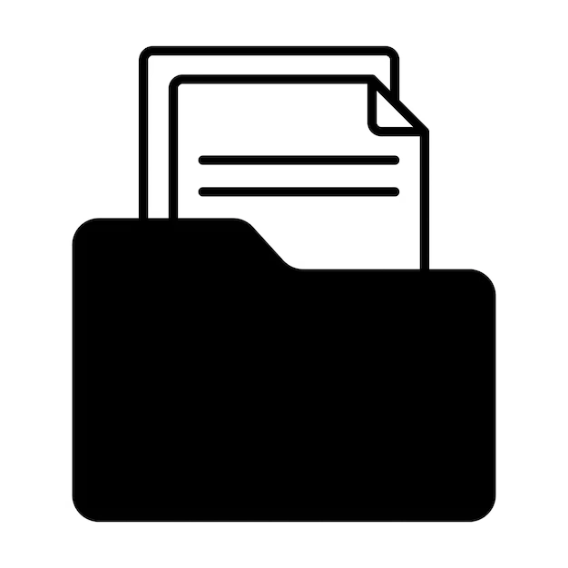

Portfólio de Mini ProjetosSite organizado conforme os cursos e materiais que estudo, dedicado a reunir os mini projetos criados por mim mesmo durante a prática diária de programação.
Selecione uma tecnologia para visualizar os projetos:

Explore os estudos de HTML5 e CSS3.